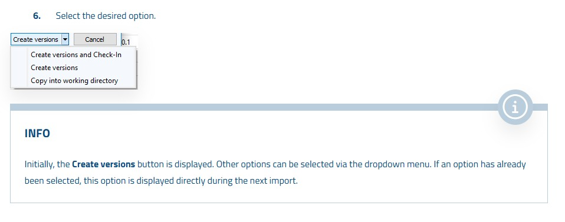

Supplier Workflow – External Collaboration
When an external supplier needs to modify a project, Octoplant's Supplier Workflow provides a secure, traceable process for exporting the project, having the supplier make changes, and re-importing the results with full version tracking.
Supplier Check-Out: Exporting the Project
The Supplier Check-Out function packages the project files for export to an external supplier who does not have direct access to the Octoplant server.
•
SupplierChangeReason.txt — for the supplier to document change reasons•
SupplierComment.txt — for general comments•
SupplierDeliveryNote.vdog-sdn — do not delete this file!SmartImport: Re-Importing Supplier Changes
When the supplier returns the modified project, use SmartImport to re-integrate the changes with full comparison and version tracking.
.vdog-sdn file).• Supplier data ↔ Original version (recommended): Shows what the supplier changed
• Supplier data ↔ Working directory: Compares with your current local files
EXPORT WITH SUPPLIER CHECK-OUT
- Step 2: Start the UserClient, select the desired component and click on the Check-Out button.
- Step 3: The Check-Out dialog opens.
- Step 4: As with every Check-Out, transfer the files from the Components on server area to the Selected components area using the > button.
- Step 5: Activate the Supplier Check-Out (user-defined target directory) checkbox in the Selected components area.
- Step 5: The additional checkboxes are then displayed:
- Activate the Compressed checkbox if you want to compress the files as ZIP files.
- Activate the Use project tree directory structure checkbox if you want to keep the access path. This is recommended if you want to check out more than one component.
- Activate the Show target directory in file manager after Check-Out checkbox to automatically open the target directory in the file manager.
- Step 7: It is strongly recommended that you activate the Lock for other users option if you want to check out projects for suppliers.
- Step 8: Select the directory to which you want to export the files. Select the ... checkbox next to the Target directory field.
- Step 8: Select the Check-Out button if you want to perform other actions in the dialog or select Check-Out and close when you are finished.
Selected components dialog samples
Selected components [ ] Supplier Check-Out (user-defined target directory) Version(s) to be copied: [Latest version (dropdown)] [ ] Check-Out latest backup [x] Under development [ ] Lock for other users Comment: [________________] [ ] Check-Out referenced standard libraries
Selected components [x] Supplier Check-Out (user-defined target directory) [x] Compressed [ ] Use project tree directory structure [ ] Show target directory in file manager after Check-Out
INFO
Each time you check out a project for suppliers with the Supplier Check-Out, the files SupplierChangeReason.txt and SupplierComment.txt are also checked out automatically. These files are used to transfer the text entered by the suppliers to the Change history tab in octoplant.
Do not delete SupplierDeliveryNote.vdog-sdn
This file is required for re-importing the project via SmartImport. Deleting it will make re-import impossible.
RE-IMPORTING PROJECTS VIA SMARTIMPORT FOR SUPPLIERS
PREREQUISITES
- SmartImport only works if the project was checked out via Supplier Check-Out and includes the SupplierDeliveryNote.vdog-sdn file.
- The target component must be checked out at the time of import.
- Suppliers are recommended to return project files either in a folder with the name ProjectData or in a ZIP archive ProjectData.zip.
RE-IMPORTING PROJECTS
- Step 2: Start the UserClient and click on the Home tab. Then click on the SmartImport for supplier projects button.
- Step 3: The SmartImport for supplier projects dialog opens.
- Step 4: In the Supplier projects area, click Add and select the directory containing the projects you want to import. This must be the directory in which the file SupplierDeliveryNote.vdog-sh created during Check-Out is located.
- Step 5: In the Import column, activate the checkboxes for the projects that you want to import.
- Step 5: If you want to check what the supplier has changed in the project before importing, select a comparison setting on the right-hand side of the dialog: Differences: supplier data <-> original version
- Differences: supplier data <-> original version: The differences between the component provided by the supplier and the version originally issued for the supplier are displayed.
- Differences: supplier data <-> working directory: The differences between the component provided by the suppliers and the contents of your working directory are displayed.
- Differences: working directory <-> last version: The differences between the state of the component in the working directory and the current version of the component are displayed.
INFO
Initially, the option Differences: supplier data <-> original version is activated. You can select other options via the dropdown menu.

Summary
| Action | Where / How | Result |
|---|---|---|
| Supplier Check-Out | Home tab → Check-Out → Enable Supplier Check-Out | Project package exported with delivery note |
| Lock Component | Check-Out dialog → Lock for other users | Concurrent changes prevented |
| Supplier Works | Supplier edits files and fills in change documents | Modified project returned |
| SmartImport | Home tab → SmartImport for supplier projects → Add directory | Changes imported and compared |
| Create Version | SmartImport → Create versions and Check-In | Supplier changes versioned on server |